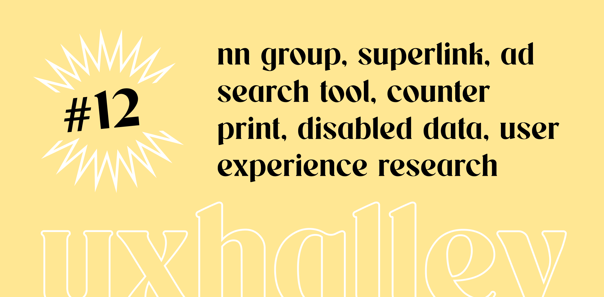

UX Halley, newsletter per designer
uxhalley, edizione #12
13 marzo 2023 — UX Halley: una newsletter bisettimanale che raccoglie news e links utili sulla UX. Le regole sono semplici: max 5 minuti di lettura; se ti interessa, lo approfondisci; se ti piace, lo condividi; a prescindere ci vediamo tra due settimane. Facile facile.
Immagine di copertina dell'edizione di UX Halley, newsetter per designer
Link per designer suggerito nell'edizione di UX Halley, newsletter per designer
i corsi di n/n group
Spesso aspiranti e junior #uxdesigner mi chiedono da dove possono partire. Ogni persona deve partire da un punto diverso e ha il proprio percorso ma se c'è un punto fermo nel mondo formativo della UX quello è proprio Nielsen Norman Group.
Link per designer suggerito nell'edizione di UX Halley, newsletter per designer
disable data monitor
La #disabilità può essere temporanea o permanente, parziale o totale. Pensandoci bene tutte le persone hanno probabilmente avuto un momento almeno di parziale e temporanea disabilità (come me ora che scrivo con una mano fasciata). Questo link raccoglie dati, interessanti e strutturati.
Link per designer suggerito nell'edizione di UX Halley, newsletter per designer
superlink
Superlink vuole costruire un nuovo modo di gestire la propria identità digitale online e permette di acquisire un proprio dominio digitale fatto di nome.cognome. Chissà come si evolverà ma a me queste cose piacciono e mi piace anche investire. alessio.cardelli me lo sono assicurato, te che fai?
Link per designer suggerito nell'edizione di UX Halley, newsletter per designer
user experience research
Ho conosciuto Matteo Tibolla proprio tramite LinkedIn e ho avuto il piacere di scambiare qualche messaggio con Francesca Bonazza. Insieme a Flaco Edizioni Group hanno scritto e pubblicato un libro veramente interessante che parla di #research #ux e in generale di #digitale. Consigliato caldamente.
Link per designer suggerito nell'edizione di UX Halley, newsletter per designer
video animati
Una vera chicca: inserisci il tuo testo, scegli colori e parametri e poi "taac" ha un video animato da poter esportare nel formato che preferisci, da usare per presentazioni, #slide, #mockup e qualsiasi altra manifestazione del tuo progetto o del tuo brand. Da avere assolutamente nella propria "cassetta degli attrezzi".
Link per designer suggerito nell'edizione di UX Halley, newsletter per designer
ADS dal mondo
Alessandro Curci mi scrive praticamente ogni 2/3 giorni con link interessantissimi, e questo è davvero super: lo apri, cerchi un brand e accedi a centinaia di visual e ADS presenti e passate dal quale prendere ispirazione. Ottimo per fare #benchmark e #competitoranalisys.
Link per designer suggerito nell'edizione di UX Halley, newsletter per designer
libri per des belli belli
Ammetto che questo link è uno di quelli che una persona come me non dovrebbe mai trovare, per la salute del proprio portafoglio, ma che figata! Una lista di libri per #designer davvero PRO che meritano di essere approfonditi, acquistati e letti (ma ammettiamolo, queste cose ci piacciono anche solo per il gusto di averle!).